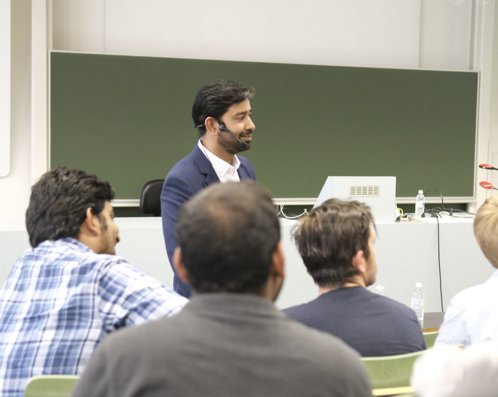
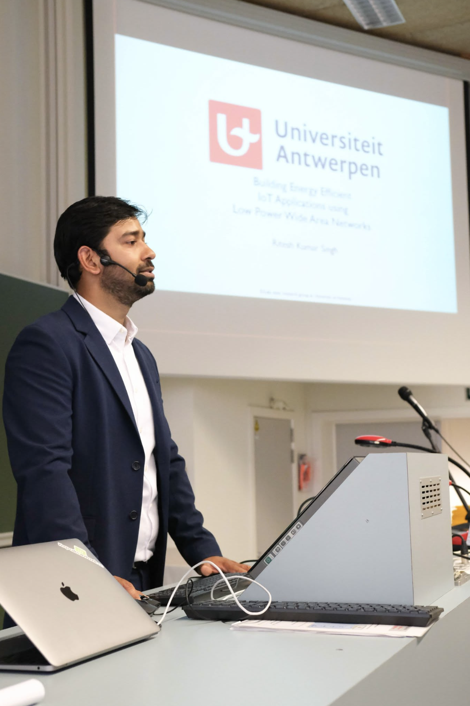

Low-Power IoT Systems
Low-power embedded communication and IoT, with emphasis on energy-aware design, energy harvesting, TinyML, constrained devices and hands-on system projects.
Current
Alongside research, I am actively involved in teaching, student supervision, academic governance, professional service, and the organisation of scientific workshops and conferences.


Low-power embedded communication and IoT, with emphasis on energy-aware design, energy harvesting, TinyML, constrained devices and hands-on system projects.
Networking fundamentals, protocol behaviour and packet-level analysis, including hands-on work with tools such as Wireshark.
Principles of wireless and mobile communication, linking fundamental concepts with current communication systems and practical engineering examples.
Embedded computing, resource-constrained platforms and the interaction between software, hardware and communication systems.
Teaching support including laboratory activities in low-level programming, integration and embedded-system development.
Undergraduate teaching during my Master's studies, contributing to education in fundamental computer science concepts.
Daily supervision and mentoring of doctoral researchers working on energy-neutral intelligent systems, energy harvesting, embedded AI, low-power communication, and real-world IoT deployments.
Supervising student research projects with emphasis on experimental methodology, system implementation, scientific writing, technical presentation and independent engineering decisions.
Serving as a PhD jury and doctoral committee member, reviewing doctoral research and contributing to the academic evaluation and development of researchers.
Member of faculty-level research and doctoral committees, contributing to doctoral evaluation, research policy, academic governance, budget discussions and assessment of research and innovation activities.
Supporting interaction between research and industry around low-power wireless technologies and contributing to collaboration within the DASH7 ecosystem.
Reviewing research proposals, journal manuscripts and conference submissions, and contributing to technical programme committees and research-community activities.
Co-organising the EN-IoT workshop series, bringing together researchers working on energy harvesting, batteryless systems, sustainable IoT, low-power communication and energy-neutral devices.
Contributing to the organisation of IEEE Future Networks activities with responsibility for demonstrations, validation and interaction around emerging communication technologies.
Supporting conference organisation and research-community engagement, including activities aimed at increasing interaction and visibility for emerging research.
Recognised by LG Electronics as Innovative Employee of the Year.
Contributed to the first design patent originating from LG Research Lab India.
Awarded at IIIT Allahabad for Master's research on lifetime enhancement and analysis of wireless sensor networks.